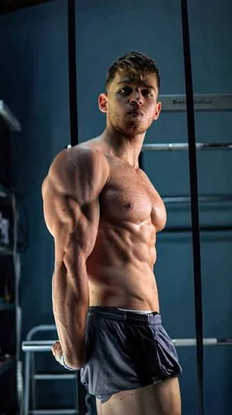

Osobný
coaching
Individuálny ďalší krok pre človeka, ktorý chce ísť v tréningu osobnejšie.
Výzvy, tréningy a komunita, ktorá ťa posúva každý deň.
Ukážka toho, ako môže YWC prepájať obsah, tréning a skorší prístup na jednom mieste.

Individuálny ďalší krok pre človeka, ktorý chce ísť v tréningu osobnejšie.
Aktuálny tréningový plán máš na jednom mieste a otvoríš ho priamo z platformy.
Použi kód YANNI5 pri nákupe na GymBeam.
Skopírované
Tréning, obsah a výzvy v jednom príbehu, ktorý stojí na konzistentnej práci.
Poznaj príbeh→